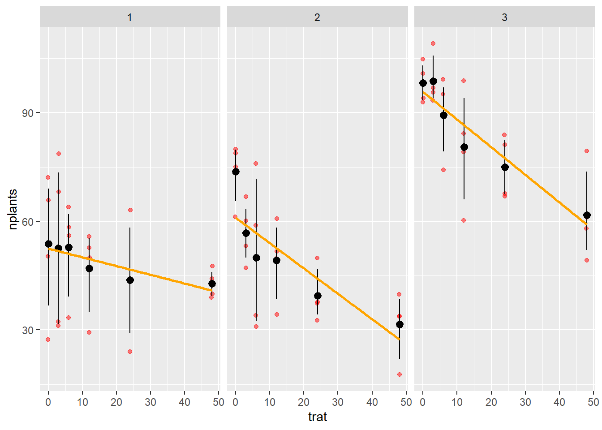
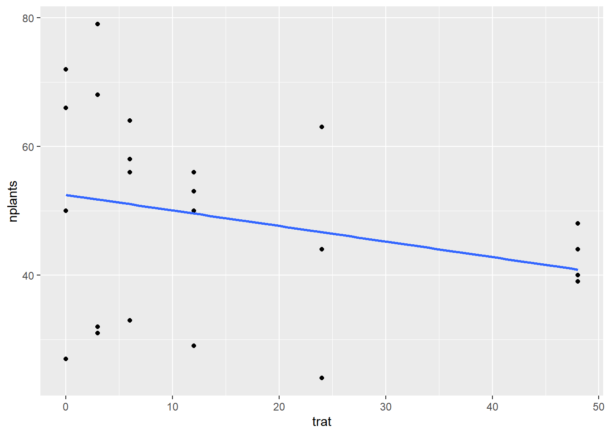
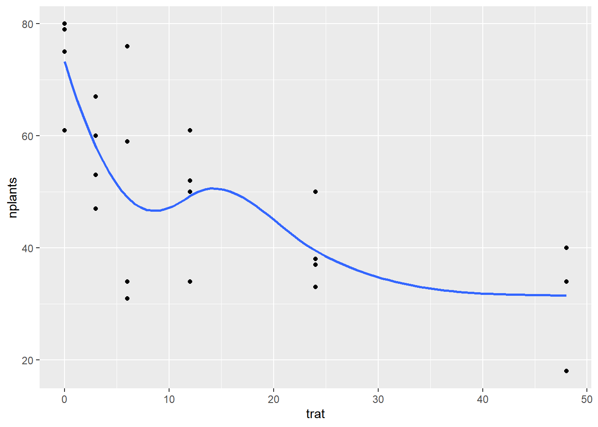
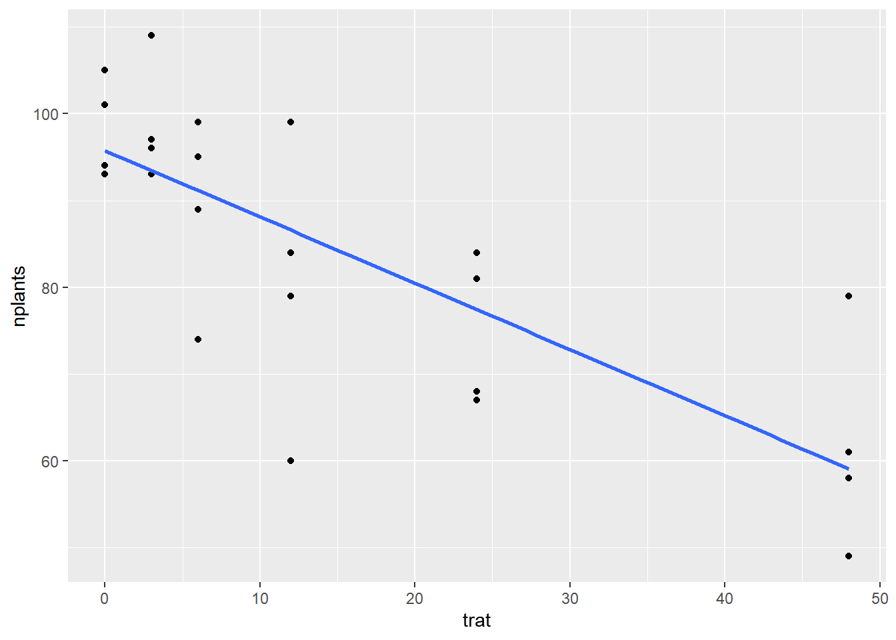
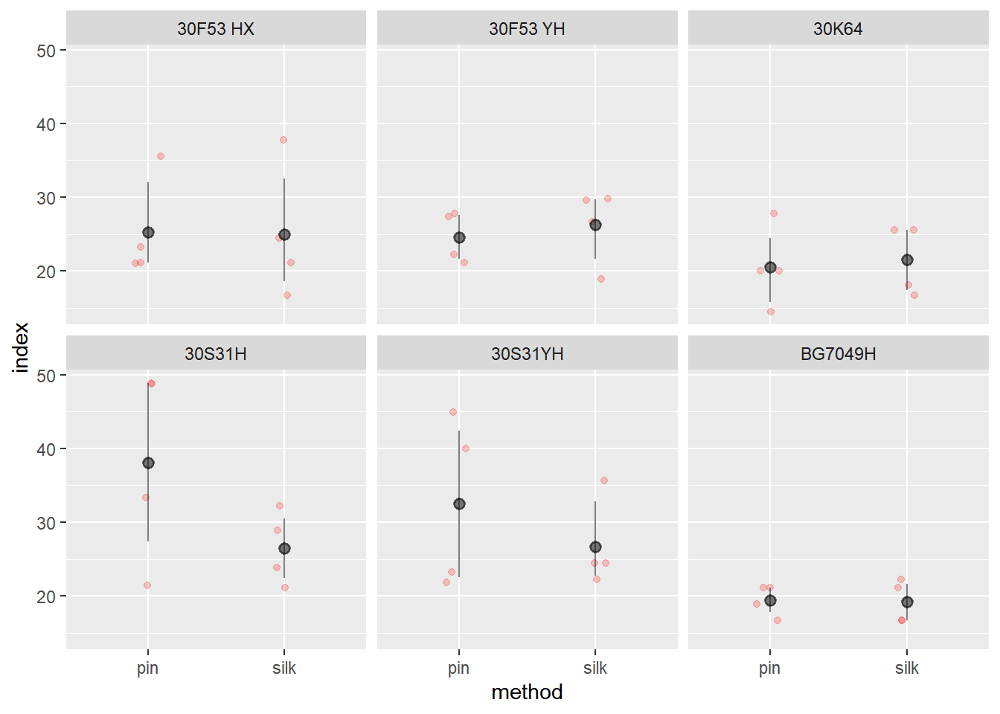
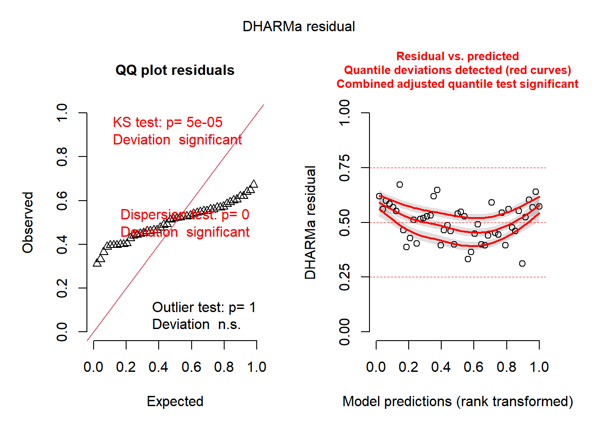
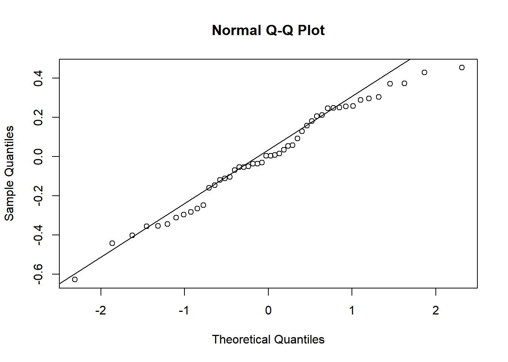
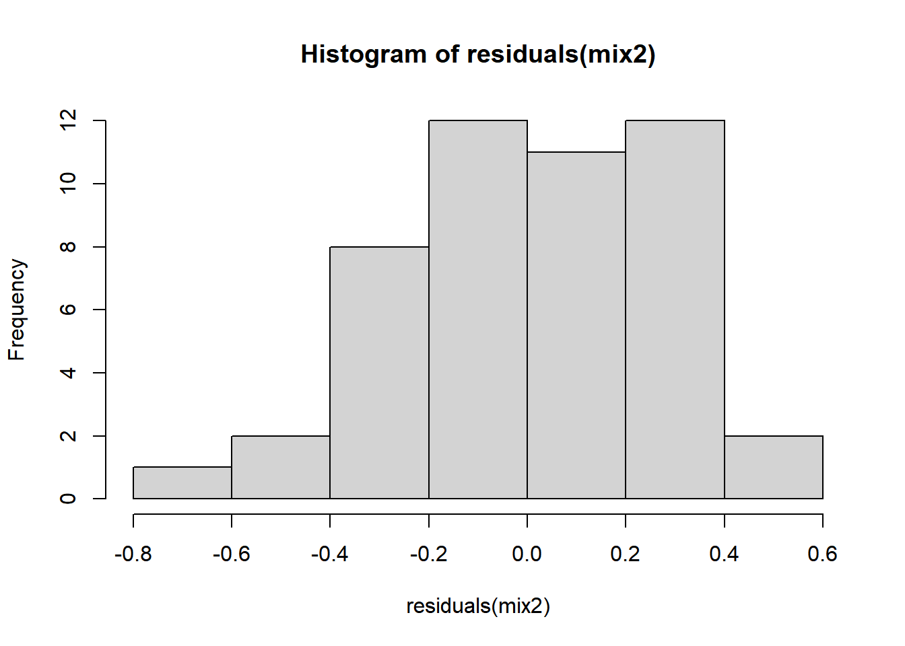
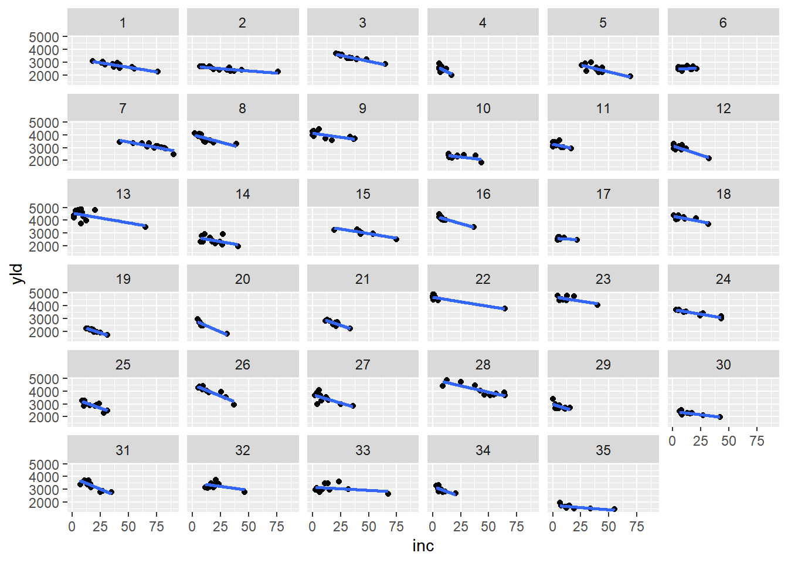
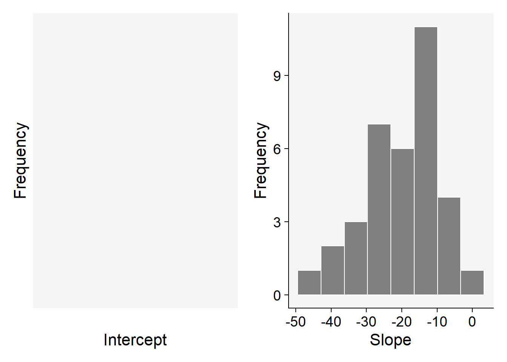

library(gsheet)
library(tidyverse)
library(ggplot2)
library(ggthemes)
library(lme4)
library(car)
library(performance)
library(DHARMa)
library(emmeans)
library(multcomp)
library(r4pde)
library(broom)
library(patchwork)
library(cowplot)
milho <- gsheet2tbl("https://docs.google.com/spreadsheets/d/1bq2N19DcZdtax2fQW9OHSGMR0X2__Z9T/edit#gid=1345524759")Regressão Linear e Outros Gráficos
Parcela Subdividida
Regressão Linear
A regressão linear é um método estatístico muito utilizado para modelar a relação entre duas variáveis, sendo uma variável dependente (Y) e uma ou mais variáveis independentes (X). Essa técnica é fundamental em diversos campos do conhecimento, como estatística.
Regressão linear pressupõe que a relação entre a variável dependente (Y) e as variáveis independentes (X) seja linear, ou seja, que a alteração em uma unidade de X cause uma alteração proporcional em Y.
estande <- gsheet2tbl("https://docs.google.com/spreadsheets/d/1bq2N19DcZdtax2fQW9OHSGMR0X2__Z9T/edit#gid=401662555")
estande |>
ggplot(aes(trat, nplants))+
geom_jitter(width = 0.1, alpha = 0.5, color = "red") +
facet_wrap(~ exp) +
stat_summary(fun.data = "mean_cl_boot", color = "black") +
geom_smooth(method = lm, se = F, color = "orange")
exp1 <- estande |>
filter(exp == 1)
exp1 |>
ggplot(aes(trat, nplants))+
geom_point()+
#ylim(1)
geom_smooth(method = "lm", se = F)
lm1 <- lm(nplants ~ trat,
data = exp1)
summary(lm1)
Call:
lm(formula = nplants ~ trat, data = exp1)
Residuals:
Min 1Q Median 3Q Max
-25.500 -6.532 1.758 8.573 27.226
Coefficients:
Estimate Std. Error t value Pr(>|t|)
(Intercept) 52.5000 4.2044 12.487 1.84e-11 ***
trat -0.2419 0.1859 -1.301 0.207
---
Signif. codes: 0 '***' 0.001 '**' 0.01 '*' 0.05 '.' 0.1 ' ' 1
Residual standard error: 15 on 22 degrees of freedom
Multiple R-squared: 0.07148, Adjusted R-squared: 0.02928
F-statistic: 1.694 on 1 and 22 DF, p-value: 0.2066glm1<- glm(nplants ~ trat, family = "gaussian",
data = exp1)
summary(glm1)
Call:
glm(formula = nplants ~ trat, family = "gaussian", data = exp1)
Coefficients:
Estimate Std. Error t value Pr(>|t|)
(Intercept) 52.5000 4.2044 12.487 1.84e-11 ***
trat -0.2419 0.1859 -1.301 0.207
---
Signif. codes: 0 '***' 0.001 '**' 0.01 '*' 0.05 '.' 0.1 ' ' 1
(Dispersion parameter for gaussian family taken to be 224.9751)
Null deviance: 5330.5 on 23 degrees of freedom
Residual deviance: 4949.5 on 22 degrees of freedom
AIC: 202
Number of Fisher Scoring iterations: 2AIC(glm1)[1] 202.0045glmb1 <- glm(nplants ~ trat, family = poisson(link = "log"),
data = exp1)
summary(glmb1)
Call:
glm(formula = nplants ~ trat, family = poisson(link = "log"),
data = exp1)
Coefficients:
Estimate Std. Error z value Pr(>|z|)
(Intercept) 3.963738 0.039359 100.708 < 2e-16 ***
trat -0.005199 0.001862 -2.793 0.00523 **
---
Signif. codes: 0 '***' 0.001 '**' 0.01 '*' 0.05 '.' 0.1 ' ' 1
(Dispersion parameter for poisson family taken to be 1)
Null deviance: 111.37 on 23 degrees of freedom
Residual deviance: 103.31 on 22 degrees of freedom
AIC: 243.58
Number of Fisher Scoring iterations: 4AIC(glmb1)[1] 243.5839glm1<- glm(nplants ~ trat, family = "gaussian",
data = estande)
summary(glm1)
Call:
glm(formula = nplants ~ trat, family = "gaussian", data = estande)
Coefficients:
Estimate Std. Error t value Pr(>|t|)
(Intercept) 69.7452 3.4156 20.420 < 2e-16 ***
trat -0.5687 0.1510 -3.766 0.000343 ***
---
Signif. codes: 0 '***' 0.001 '**' 0.01 '*' 0.05 '.' 0.1 ' ' 1
(Dispersion parameter for gaussian family taken to be 445.4358)
Null deviance: 37497 on 71 degrees of freedom
Residual deviance: 31181 on 70 degrees of freedom
AIC: 647.43
Number of Fisher Scoring iterations: 2AIC(glm1)[1] 647.4307glmb1 <- glm(nplants ~ trat, family = poisson(link = "log"),
data = estande)
summary(glmb1)
Call:
glm(formula = nplants ~ trat, family = poisson(link = "log"),
data = estande)
Coefficients:
Estimate Std. Error z value Pr(>|z|)
(Intercept) 4.255219 0.019998 212.79 <2e-16 ***
trat -0.010251 0.001011 -10.14 <2e-16 ***
---
Signif. codes: 0 '***' 0.001 '**' 0.01 '*' 0.05 '.' 0.1 ' ' 1
(Dispersion parameter for poisson family taken to be 1)
Null deviance: 626.80 on 71 degrees of freedom
Residual deviance: 516.67 on 70 degrees of freedom
AIC: 943.59
Number of Fisher Scoring iterations: 4AIC(glmb1)[1] 943.5858exp2 <- estande |>
filter(exp == 2)
exp2 |>
ggplot(aes(trat, nplants))+
geom_point()+
#ylim(0,001)
geom_smooth(se = F)
lm2 <- lm(nplants ~ trat,
data = exp2)
summary(lm2)
Call:
lm(formula = nplants ~ trat, data = exp2)
Residuals:
Min 1Q Median 3Q Max
-25.7816 -7.7150 0.5653 8.1929 19.2184
Coefficients:
Estimate Std. Error t value Pr(>|t|)
(Intercept) 60.9857 3.6304 16.798 4.93e-14 ***
trat -0.7007 0.1605 -4.365 0.000247 ***
---
Signif. codes: 0 '***' 0.001 '**' 0.01 '*' 0.05 '.' 0.1 ' ' 1
Residual standard error: 12.95 on 22 degrees of freedom
Multiple R-squared: 0.4641, Adjusted R-squared: 0.4398
F-statistic: 19.05 on 1 and 22 DF, p-value: 0.0002473glm2<- glm(nplants ~ trat, family = "gaussian",
data = exp2)
summary(glm2)
Call:
glm(formula = nplants ~ trat, family = "gaussian", data = exp2)
Coefficients:
Estimate Std. Error t value Pr(>|t|)
(Intercept) 60.9857 3.6304 16.798 4.93e-14 ***
trat -0.7007 0.1605 -4.365 0.000247 ***
---
Signif. codes: 0 '***' 0.001 '**' 0.01 '*' 0.05 '.' 0.1 ' ' 1
(Dispersion parameter for gaussian family taken to be 167.7464)
Null deviance: 6886.6 on 23 degrees of freedom
Residual deviance: 3690.4 on 22 degrees of freedom
AIC: 194.96
Number of Fisher Scoring iterations: 2AIC(glm2)[1] 194.9597glmb2 <- glm(nplants ~ trat, family = poisson(link = "log"),
data = exp2)
summary(glmb2)
Call:
glm(formula = nplants ~ trat, family = poisson(link = "log"),
data = exp2)
Coefficients:
Estimate Std. Error z value Pr(>|z|)
(Intercept) 4.134189 0.037583 110.003 < 2e-16 ***
trat -0.016270 0.002059 -7.901 2.76e-15 ***
---
Signif. codes: 0 '***' 0.001 '**' 0.01 '*' 0.05 '.' 0.1 ' ' 1
(Dispersion parameter for poisson family taken to be 1)
Null deviance: 139.783 on 23 degrees of freedom
Residual deviance: 69.578 on 22 degrees of freedom
AIC: 210.24
Number of Fisher Scoring iterations: 4AIC(glmb2)[1] 210.2353glm2<- glm(nplants ~ trat, family = "gaussian",
data = estande)
summary(glm2)
Call:
glm(formula = nplants ~ trat, family = "gaussian", data = estande)
Coefficients:
Estimate Std. Error t value Pr(>|t|)
(Intercept) 69.7452 3.4156 20.420 < 2e-16 ***
trat -0.5687 0.1510 -3.766 0.000343 ***
---
Signif. codes: 0 '***' 0.001 '**' 0.01 '*' 0.05 '.' 0.1 ' ' 1
(Dispersion parameter for gaussian family taken to be 445.4358)
Null deviance: 37497 on 71 degrees of freedom
Residual deviance: 31181 on 70 degrees of freedom
AIC: 647.43
Number of Fisher Scoring iterations: 2AIC(glm2)[1] 647.4307glmb2 <- glm(nplants ~ trat, family = poisson(link = "log"),
data = estande)
summary(glmb2)
Call:
glm(formula = nplants ~ trat, family = poisson(link = "log"),
data = estande)
Coefficients:
Estimate Std. Error z value Pr(>|z|)
(Intercept) 4.255219 0.019998 212.79 <2e-16 ***
trat -0.010251 0.001011 -10.14 <2e-16 ***
---
Signif. codes: 0 '***' 0.001 '**' 0.01 '*' 0.05 '.' 0.1 ' ' 1
(Dispersion parameter for poisson family taken to be 1)
Null deviance: 626.80 on 71 degrees of freedom
Residual deviance: 516.67 on 70 degrees of freedom
AIC: 943.59
Number of Fisher Scoring iterations: 4AIC(glmb2)[1] 943.5858exp3 <- estande |>
filter(exp == 3)
exp3 |>
ggplot(aes(trat, nplants))+
geom_point()+
#ylim(0,001)
geom_smooth(method = "lm", se = F)
lm3 <- lm(nplants ~ trat,
data = exp3)
summary(lm3)
Call:
lm(formula = nplants ~ trat, data = exp3)
Residuals:
Min 1Q Median 3Q Max
-26.5887 -3.9597 0.7177 5.5806 19.8952
Coefficients:
Estimate Std. Error t value Pr(>|t|)
(Intercept) 95.7500 2.9529 32.425 < 2e-16 ***
trat -0.7634 0.1306 -5.847 6.97e-06 ***
---
Signif. codes: 0 '***' 0.001 '**' 0.01 '*' 0.05 '.' 0.1 ' ' 1
Residual standard error: 10.53 on 22 degrees of freedom
Multiple R-squared: 0.6085, Adjusted R-squared: 0.5907
F-statistic: 34.19 on 1 and 22 DF, p-value: 6.968e-06glm3<- glm(nplants ~ trat, family = "gaussian",
data = exp3)
summary(glm3)
Call:
glm(formula = nplants ~ trat, family = "gaussian", data = exp3)
Coefficients:
Estimate Std. Error t value Pr(>|t|)
(Intercept) 95.7500 2.9529 32.425 < 2e-16 ***
trat -0.7634 0.1306 -5.847 6.97e-06 ***
---
Signif. codes: 0 '***' 0.001 '**' 0.01 '*' 0.05 '.' 0.1 ' ' 1
(Dispersion parameter for gaussian family taken to be 110.9787)
Null deviance: 6235.8 on 23 degrees of freedom
Residual deviance: 2441.5 on 22 degrees of freedom
AIC: 185.04
Number of Fisher Scoring iterations: 2AIC(glm3)[1] 185.0449glmb3 <- glm(nplants ~ trat, family = poisson(link = "log"),
data = exp3)
summary(glmb3)
Call:
glm(formula = nplants ~ trat, family = poisson(link = "log"),
data = exp3)
Coefficients:
Estimate Std. Error z value Pr(>|z|)
(Intercept) 4.571590 0.029539 154.762 < 2e-16 ***
trat -0.009965 0.001488 -6.697 2.13e-11 ***
---
Signif. codes: 0 '***' 0.001 '**' 0.01 '*' 0.05 '.' 0.1 ' ' 1
(Dispersion parameter for poisson family taken to be 1)
Null deviance: 77.906 on 23 degrees of freedom
Residual deviance: 29.952 on 22 degrees of freedom
AIC: 183.93
Number of Fisher Scoring iterations: 4AIC(glmb3)[1] 183.9324glm3<- glm(nplants ~ trat, family = "gaussian",
data = estande)
summary(glm3)
Call:
glm(formula = nplants ~ trat, family = "gaussian", data = estande)
Coefficients:
Estimate Std. Error t value Pr(>|t|)
(Intercept) 69.7452 3.4156 20.420 < 2e-16 ***
trat -0.5687 0.1510 -3.766 0.000343 ***
---
Signif. codes: 0 '***' 0.001 '**' 0.01 '*' 0.05 '.' 0.1 ' ' 1
(Dispersion parameter for gaussian family taken to be 445.4358)
Null deviance: 37497 on 71 degrees of freedom
Residual deviance: 31181 on 70 degrees of freedom
AIC: 647.43
Number of Fisher Scoring iterations: 2AIC(glm3)[1] 647.4307glmb3 <- glm(nplants ~ trat, family = poisson(link = "log"),
data = estande)
summary(glmb3)
Call:
glm(formula = nplants ~ trat, family = poisson(link = "log"),
data = estande)
Coefficients:
Estimate Std. Error z value Pr(>|z|)
(Intercept) 4.255219 0.019998 212.79 <2e-16 ***
trat -0.010251 0.001011 -10.14 <2e-16 ***
---
Signif. codes: 0 '***' 0.001 '**' 0.01 '*' 0.05 '.' 0.1 ' ' 1
(Dispersion parameter for poisson family taken to be 1)
Null deviance: 626.80 on 71 degrees of freedom
Residual deviance: 516.67 on 70 degrees of freedom
AIC: 943.59
Number of Fisher Scoring iterations: 4AIC(glmb3)[1] 943.5858Index
milho |>
ggplot(aes(method, index)) +
geom_jitter(width = 0.1, alpha = 0.2, color = "red") +
facet_wrap(~ hybrid)+
stat_summary(fun.data = "mean_cl_boot", color = "black",
alpha = 0.5)
milho# A tibble: 48 × 5
hybrid block method index yield
<chr> <dbl> <chr> <dbl> <dbl>
1 30F53 HX 1 pin 21.1 12920
2 30F53 HX 2 pin 21.1 9870
3 30F53 HX 3 pin 23.3 8920
4 30F53 HX 4 pin 35.6 13120
5 30F53 YH 1 pin 21.1 12060
6 30F53 YH 2 pin 22.2 7860
7 30F53 YH 3 pin 27.3 7410
8 30F53 YH 4 pin 27.8 10300
9 30K64 1 pin 20 11700
10 30K64 2 pin 20 10700
# ℹ 38 more rowsModelo Para Subdividida
milho <- milho |>
mutate(block = as.factor(block))
mix2 <- lmer(sqrt(index) ~ hybrid*method + block + (1|block/hybrid), data = milho)
Anova(mix2)Analysis of Deviance Table (Type II Wald chisquare tests)
Response: sqrt(index)
Chisq Df Pr(>Chisq)
hybrid 15.3159 5 0.009095 **
method 3.8886 1 0.048615 *
block 0.0718 3 0.994997
hybrid:method 13.3812 5 0.020057 *
---
Signif. codes: 0 '***' 0.001 '**' 0.01 '*' 0.05 '.' 0.1 ' ' 1check_normality(mix2)OK: residuals appear as normally distributed (p = 0.440).check_heteroscedasticity(mix2)OK: Error variance appears to be homoscedastic (p = 0.971).plot(simulateResiduals(mix2))
qqnorm(residuals (mix2))
qqline(residuals(mix2))
hist(residuals(mix2))
medias_milho <- emmeans(mix2,
~ hybrid | method,
type = "response")
medias_milho2 <- emmeans(mix2,
~ hybrid | method,
type = "response")
cld(medias_milho, Letters = LETTERS)method = pin:
hybrid response SE df lower.CL upper.CL .group
BG7049H 19.4 10.7 6084 4.10 46.0 A
30K64 20.3 10.9 6084 4.51 47.4 A
30F53 YH 24.5 12.0 6084 6.61 53.7 AB
30F53 HX 25.0 12.1 6084 6.84 54.4 AB
30S31YH 31.7 13.7 6084 10.57 64.2 AB
30S31H 37.1 14.8 6084 13.79 71.8 B
method = silk:
hybrid response SE df lower.CL upper.CL .group
BG7049H 19.1 10.6 6084 3.96 45.6 A
30K64 21.3 11.2 6084 5.00 48.9 A
30F53 HX 24.4 12.0 6084 6.56 53.6 A
30F53 YH 26.0 12.4 6084 7.42 56.0 A
30S31H 26.3 12.5 6084 7.57 56.4 A
30S31YH 26.4 12.5 6084 7.62 56.5 A
Results are averaged over the levels of: block
Degrees-of-freedom method: kenward-roger
Confidence level used: 0.95
Intervals are back-transformed from the sqrt scale
Note: contrasts are still on the sqrt scale
P value adjustment: tukey method for comparing a family of 6 estimates
significance level used: alpha = 0.05
NOTE: If two or more means share the same grouping symbol,
then we cannot show them to be different.
But we also did not show them to be the same. cld(medias_milho2, Letters = LETTERS)method = pin:
hybrid response SE df lower.CL upper.CL .group
BG7049H 19.4 10.7 6084 4.10 46.0 A
30K64 20.3 10.9 6084 4.51 47.4 A
30F53 YH 24.5 12.0 6084 6.61 53.7 AB
30F53 HX 25.0 12.1 6084 6.84 54.4 AB
30S31YH 31.7 13.7 6084 10.57 64.2 AB
30S31H 37.1 14.8 6084 13.79 71.8 B
method = silk:
hybrid response SE df lower.CL upper.CL .group
BG7049H 19.1 10.6 6084 3.96 45.6 A
30K64 21.3 11.2 6084 5.00 48.9 A
30F53 HX 24.4 12.0 6084 6.56 53.6 A
30F53 YH 26.0 12.4 6084 7.42 56.0 A
30S31H 26.3 12.5 6084 7.57 56.4 A
30S31YH 26.4 12.5 6084 7.62 56.5 A
Results are averaged over the levels of: block
Degrees-of-freedom method: kenward-roger
Confidence level used: 0.95
Intervals are back-transformed from the sqrt scale
Note: contrasts are still on the sqrt scale
P value adjustment: tukey method for comparing a family of 6 estimates
significance level used: alpha = 0.05
NOTE: If two or more means share the same grouping symbol,
then we cannot show them to be different.
But we also did not show them to be the same. mix 3
mix3 <- lmer(sqrt(yield) ~ hybrid*method + block + (1|block/hybrid), data = milho)
Anova(mix3)Analysis of Deviance Table (Type II Wald chisquare tests)
Response: sqrt(yield)
Chisq Df Pr(>Chisq)
hybrid 25.5591 5 0.0001086 ***
method 0.0520 1 0.8196750
block 2.3606 3 0.5010021
hybrid:method 24.4985 5 0.0001741 ***
---
Signif. codes: 0 '***' 0.001 '**' 0.01 '*' 0.05 '.' 0.1 ' ' 1check_normality(mix3)OK: residuals appear as normally distributed (p = 0.214).check_heteroscedasticity(mix3)OK: Error variance appears to be homoscedastic (p = 0.686).Morfo Branco
wm <- WhiteMoldSoybean
wm |>
ggplot(aes(inc, yld, group = factor(study)))+
geom_point()+
facet_wrap(~ study)+
geom_smooth(method = "lm", se = F)
theme_minimal()List of 136
$ line :List of 6
..$ colour : chr "black"
..$ linewidth : num 0.5
..$ linetype : num 1
..$ lineend : chr "butt"
..$ arrow : logi FALSE
..$ inherit.blank: logi TRUE
..- attr(*, "class")= chr [1:2] "element_line" "element"
$ rect :List of 5
..$ fill : chr "white"
..$ colour : chr "black"
..$ linewidth : num 0.5
..$ linetype : num 1
..$ inherit.blank: logi TRUE
..- attr(*, "class")= chr [1:2] "element_rect" "element"
$ text :List of 11
..$ family : chr ""
..$ face : chr "plain"
..$ colour : chr "black"
..$ size : num 11
..$ hjust : num 0.5
..$ vjust : num 0.5
..$ angle : num 0
..$ lineheight : num 0.9
..$ margin : 'margin' num [1:4] 0points 0points 0points 0points
.. ..- attr(*, "unit")= int 8
..$ debug : logi FALSE
..$ inherit.blank: logi TRUE
..- attr(*, "class")= chr [1:2] "element_text" "element"
$ title : NULL
$ aspect.ratio : NULL
$ axis.title : NULL
$ axis.title.x :List of 11
..$ family : NULL
..$ face : NULL
..$ colour : NULL
..$ size : NULL
..$ hjust : NULL
..$ vjust : num 1
..$ angle : NULL
..$ lineheight : NULL
..$ margin : 'margin' num [1:4] 2.75points 0points 0points 0points
.. ..- attr(*, "unit")= int 8
..$ debug : NULL
..$ inherit.blank: logi TRUE
..- attr(*, "class")= chr [1:2] "element_text" "element"
$ axis.title.x.top :List of 11
..$ family : NULL
..$ face : NULL
..$ colour : NULL
..$ size : NULL
..$ hjust : NULL
..$ vjust : num 0
..$ angle : NULL
..$ lineheight : NULL
..$ margin : 'margin' num [1:4] 0points 0points 2.75points 0points
.. ..- attr(*, "unit")= int 8
..$ debug : NULL
..$ inherit.blank: logi TRUE
..- attr(*, "class")= chr [1:2] "element_text" "element"
$ axis.title.x.bottom : NULL
$ axis.title.y :List of 11
..$ family : NULL
..$ face : NULL
..$ colour : NULL
..$ size : NULL
..$ hjust : NULL
..$ vjust : num 1
..$ angle : num 90
..$ lineheight : NULL
..$ margin : 'margin' num [1:4] 0points 2.75points 0points 0points
.. ..- attr(*, "unit")= int 8
..$ debug : NULL
..$ inherit.blank: logi TRUE
..- attr(*, "class")= chr [1:2] "element_text" "element"
$ axis.title.y.left : NULL
$ axis.title.y.right :List of 11
..$ family : NULL
..$ face : NULL
..$ colour : NULL
..$ size : NULL
..$ hjust : NULL
..$ vjust : num 1
..$ angle : num -90
..$ lineheight : NULL
..$ margin : 'margin' num [1:4] 0points 0points 0points 2.75points
.. ..- attr(*, "unit")= int 8
..$ debug : NULL
..$ inherit.blank: logi TRUE
..- attr(*, "class")= chr [1:2] "element_text" "element"
$ axis.text :List of 11
..$ family : NULL
..$ face : NULL
..$ colour : chr "grey30"
..$ size : 'rel' num 0.8
..$ hjust : NULL
..$ vjust : NULL
..$ angle : NULL
..$ lineheight : NULL
..$ margin : NULL
..$ debug : NULL
..$ inherit.blank: logi TRUE
..- attr(*, "class")= chr [1:2] "element_text" "element"
$ axis.text.x :List of 11
..$ family : NULL
..$ face : NULL
..$ colour : NULL
..$ size : NULL
..$ hjust : NULL
..$ vjust : num 1
..$ angle : NULL
..$ lineheight : NULL
..$ margin : 'margin' num [1:4] 2.2points 0points 0points 0points
.. ..- attr(*, "unit")= int 8
..$ debug : NULL
..$ inherit.blank: logi TRUE
..- attr(*, "class")= chr [1:2] "element_text" "element"
$ axis.text.x.top :List of 11
..$ family : NULL
..$ face : NULL
..$ colour : NULL
..$ size : NULL
..$ hjust : NULL
..$ vjust : num 0
..$ angle : NULL
..$ lineheight : NULL
..$ margin : 'margin' num [1:4] 0points 0points 2.2points 0points
.. ..- attr(*, "unit")= int 8
..$ debug : NULL
..$ inherit.blank: logi TRUE
..- attr(*, "class")= chr [1:2] "element_text" "element"
$ axis.text.x.bottom : NULL
$ axis.text.y :List of 11
..$ family : NULL
..$ face : NULL
..$ colour : NULL
..$ size : NULL
..$ hjust : num 1
..$ vjust : NULL
..$ angle : NULL
..$ lineheight : NULL
..$ margin : 'margin' num [1:4] 0points 2.2points 0points 0points
.. ..- attr(*, "unit")= int 8
..$ debug : NULL
..$ inherit.blank: logi TRUE
..- attr(*, "class")= chr [1:2] "element_text" "element"
$ axis.text.y.left : NULL
$ axis.text.y.right :List of 11
..$ family : NULL
..$ face : NULL
..$ colour : NULL
..$ size : NULL
..$ hjust : num 0
..$ vjust : NULL
..$ angle : NULL
..$ lineheight : NULL
..$ margin : 'margin' num [1:4] 0points 0points 0points 2.2points
.. ..- attr(*, "unit")= int 8
..$ debug : NULL
..$ inherit.blank: logi TRUE
..- attr(*, "class")= chr [1:2] "element_text" "element"
$ axis.text.theta : NULL
$ axis.text.r :List of 11
..$ family : NULL
..$ face : NULL
..$ colour : NULL
..$ size : NULL
..$ hjust : num 0.5
..$ vjust : NULL
..$ angle : NULL
..$ lineheight : NULL
..$ margin : 'margin' num [1:4] 0points 2.2points 0points 2.2points
.. ..- attr(*, "unit")= int 8
..$ debug : NULL
..$ inherit.blank: logi TRUE
..- attr(*, "class")= chr [1:2] "element_text" "element"
$ axis.ticks : list()
..- attr(*, "class")= chr [1:2] "element_blank" "element"
$ axis.ticks.x : NULL
$ axis.ticks.x.top : NULL
$ axis.ticks.x.bottom : NULL
$ axis.ticks.y : NULL
$ axis.ticks.y.left : NULL
$ axis.ticks.y.right : NULL
$ axis.ticks.theta : NULL
$ axis.ticks.r : NULL
$ axis.minor.ticks.x.top : NULL
$ axis.minor.ticks.x.bottom : NULL
$ axis.minor.ticks.y.left : NULL
$ axis.minor.ticks.y.right : NULL
$ axis.minor.ticks.theta : NULL
$ axis.minor.ticks.r : NULL
$ axis.ticks.length : 'simpleUnit' num 2.75points
..- attr(*, "unit")= int 8
$ axis.ticks.length.x : NULL
$ axis.ticks.length.x.top : NULL
$ axis.ticks.length.x.bottom : NULL
$ axis.ticks.length.y : NULL
$ axis.ticks.length.y.left : NULL
$ axis.ticks.length.y.right : NULL
$ axis.ticks.length.theta : NULL
$ axis.ticks.length.r : NULL
$ axis.minor.ticks.length : 'rel' num 0.75
$ axis.minor.ticks.length.x : NULL
$ axis.minor.ticks.length.x.top : NULL
$ axis.minor.ticks.length.x.bottom: NULL
$ axis.minor.ticks.length.y : NULL
$ axis.minor.ticks.length.y.left : NULL
$ axis.minor.ticks.length.y.right : NULL
$ axis.minor.ticks.length.theta : NULL
$ axis.minor.ticks.length.r : NULL
$ axis.line : list()
..- attr(*, "class")= chr [1:2] "element_blank" "element"
$ axis.line.x : NULL
$ axis.line.x.top : NULL
$ axis.line.x.bottom : NULL
$ axis.line.y : NULL
$ axis.line.y.left : NULL
$ axis.line.y.right : NULL
$ axis.line.theta : NULL
$ axis.line.r : NULL
$ legend.background : list()
..- attr(*, "class")= chr [1:2] "element_blank" "element"
$ legend.margin : 'margin' num [1:4] 5.5points 5.5points 5.5points 5.5points
..- attr(*, "unit")= int 8
$ legend.spacing : 'simpleUnit' num 11points
..- attr(*, "unit")= int 8
$ legend.spacing.x : NULL
$ legend.spacing.y : NULL
$ legend.key : list()
..- attr(*, "class")= chr [1:2] "element_blank" "element"
$ legend.key.size : 'simpleUnit' num 1.2lines
..- attr(*, "unit")= int 3
$ legend.key.height : NULL
$ legend.key.width : NULL
$ legend.key.spacing : 'simpleUnit' num 5.5points
..- attr(*, "unit")= int 8
$ legend.key.spacing.x : NULL
$ legend.key.spacing.y : NULL
$ legend.frame : NULL
$ legend.ticks : NULL
$ legend.ticks.length : 'rel' num 0.2
$ legend.axis.line : NULL
$ legend.text :List of 11
..$ family : NULL
..$ face : NULL
..$ colour : NULL
..$ size : 'rel' num 0.8
..$ hjust : NULL
..$ vjust : NULL
..$ angle : NULL
..$ lineheight : NULL
..$ margin : NULL
..$ debug : NULL
..$ inherit.blank: logi TRUE
..- attr(*, "class")= chr [1:2] "element_text" "element"
$ legend.text.position : NULL
$ legend.title :List of 11
..$ family : NULL
..$ face : NULL
..$ colour : NULL
..$ size : NULL
..$ hjust : num 0
..$ vjust : NULL
..$ angle : NULL
..$ lineheight : NULL
..$ margin : NULL
..$ debug : NULL
..$ inherit.blank: logi TRUE
..- attr(*, "class")= chr [1:2] "element_text" "element"
$ legend.title.position : NULL
$ legend.position : chr "right"
$ legend.position.inside : NULL
$ legend.direction : NULL
$ legend.byrow : NULL
$ legend.justification : chr "center"
$ legend.justification.top : NULL
$ legend.justification.bottom : NULL
$ legend.justification.left : NULL
$ legend.justification.right : NULL
$ legend.justification.inside : NULL
$ legend.location : NULL
$ legend.box : NULL
$ legend.box.just : NULL
$ legend.box.margin : 'margin' num [1:4] 0cm 0cm 0cm 0cm
..- attr(*, "unit")= int 1
$ legend.box.background : list()
..- attr(*, "class")= chr [1:2] "element_blank" "element"
$ legend.box.spacing : 'simpleUnit' num 11points
..- attr(*, "unit")= int 8
[list output truncated]
- attr(*, "class")= chr [1:2] "theme" "gg"
- attr(*, "complete")= logi TRUE
- attr(*, "validate")= logi TRUEmorfo1 <- lm(yld ~ inc, data = wm)
summary(morfo1)
Call:
lm(formula = yld ~ inc, data = wm)
Residuals:
Min 1Q Median 3Q Max
-1657.85 -594.50 -91.32 531.76 1693.15
Coefficients:
Estimate Std. Error t value Pr(>|t|)
(Intercept) 3299.619 56.451 58.451 < 2e-16 ***
inc -9.261 2.108 -4.393 1.45e-05 ***
---
Signif. codes: 0 '***' 0.001 '**' 0.01 '*' 0.05 '.' 0.1 ' ' 1
Residual standard error: 745.8 on 380 degrees of freedom
Multiple R-squared: 0.04833, Adjusted R-squared: 0.04582
F-statistic: 19.3 on 1 and 380 DF, p-value: 1.452e-05morfo2 <- wm |>
group_by(study) |>
do(tidy(lm(.$yld ~ .$inc),conf.int = TRUE))
morfo2# A tibble: 70 × 8
# Groups: study [35]
study term estimate std.error statistic p.value conf.low conf.high
<dbl> <chr> <dbl> <dbl> <dbl> <dbl> <dbl> <dbl>
1 1 (Intercept) 3329. 86.8 38.3 4.60e-13 3138. 3520.
2 1 .$inc -14.2 2.08 -6.85 2.78e- 5 -18.8 -9.64
3 2 (Intercept) 2682. 48.6 55.2 8.55e-15 2575. 2789.
4 2 .$inc -6.93 1.49 -4.66 6.89e- 4 -10.2 -3.66
5 3 (Intercept) 4017. 61.6 65.2 1.37e-15 3882. 4153.
6 3 .$inc -18.6 1.71 -10.9 3.11e- 7 -22.4 -14.9
7 4 (Intercept) 2814. 151. 18.6 1.15e- 9 2481. 3147.
8 4 .$inc -43.5 16.8 -2.58 2.56e- 2 -80.5 -6.38
9 5 (Intercept) 3317. 234. 14.2 2.07e- 8 2802. 3832.
10 5 .$inc -21.2 5.69 -3.72 3.36e- 3 -33.7 -8.67
# ℹ 60 more rowsp3 <- morfo2 |>
filter(term == "Intercept") |>
ggplot(aes(x = estimate))+
geom_histogram(bins = 8, color = "white", fill = "gray50")+
theme_r4pde()+
labs(x= "Intercept", y = "Frequency")
p4 <- morfo2 |>
filter(term == ".$inc") |>
ggplot(aes(x = estimate))+
geom_histogram(bins = 8, color = "white", fill = "gray50")+
theme_r4pde()+
labs(x= "Slope", y = "Frequency")
p3 | p4
morfo3 <- lmer(yld ~ inc + (inc | study), data = wm,
REML = F)
summary(morfo3)Linear mixed model fit by maximum likelihood ['lmerMod']
Formula: yld ~ inc + (inc | study)
Data: wm
AIC BIC logLik deviance df.resid
5319.4 5343.1 -2653.7 5307.4 376
Scaled residuals:
Min 1Q Median 3Q Max
-3.7078 -0.5991 -0.0295 0.5077 3.2364
Random effects:
Groups Name Variance Std.Dev. Corr
study (Intercept) 557573.08 746.708
inc 36.85 6.071 -0.29
Residual 37228.73 192.947
Number of obs: 382, groups: study, 35
Fixed effects:
Estimate Std. Error t value
(Intercept) 3455.432 128.063 26.98
inc -17.236 1.451 -11.88
Correlation of Fixed Effects:
(Intr)
inc -0.300
optimizer (nloptwrap) convergence code: 0 (OK)
Model failed to converge with max|grad| = 0.416806 (tol = 0.002, component 1)